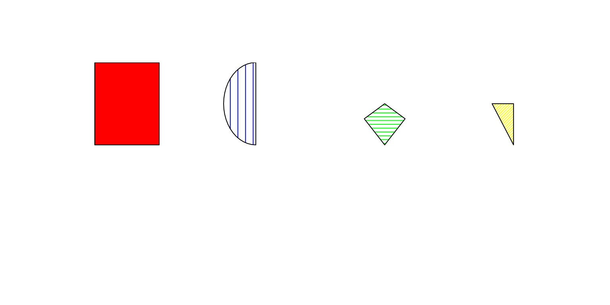

Pedigree plotting details
TM Therneau, JP Sinnwell, Louis Le Nezet
14 February, 2025
Source:vignettes/pedigree_plot.Rmd
pedigree_plot.RmdIntroduction
The plotting function for Pedigrees has 5 tasks
- Gather information and check the data. An important step is the call to align.
- Set up the plot region and size the symbols. The program wants to plot circles and squares, so needs to understand the geometry of the paper, Pedigree size, and text size to get the right shape and size symbols.
- Set up the plot and add the symbols for each subject
- Add connecting lines between spouses, and children with parents
- Create an invisible return value containing the locations.
Another task, not yet completely understood, and certainly not implemented, is how we might break a plot across multiple pages.
Setup
The new version of the plotting Pedigree function works in two step.
-
ped_to_plotdf()create a dataframe from a Pedigree given containing all the necessary information to plot all the elements of the Pedigree: “polygons”, “text”, “segments”, “arcs” -
plot_from_df()use a given dataframe and plot all the element given
The advantage of this two step method, is that all the plotting can be parralelised, each element can be customised by the user if necessary and additional elements can also be added to the plot by just adding a new row.
If multiple families are present in the Pedigree object, then one dataframe per family will be produced and the first one will be plotted.
For more informations about those two functions, see the help page.
Sizing
Now we need to set the sizes. From align() we will get
the maximum width and depth. There is one plotted row for each row of
the returned matrices. The number of columns of the matrices is the max
width of the Pedigree, so there are unused positions in shorter rows,
these can be identifed by having an nid value of 0. Horizontal locations
for each point go from 0 to xmax, subjects are at least 1 unit apart; a
large number will be exactly one unit part. These locations will be at
the top center of each plotted symbol.
Set the graphical parameters
We would like to to make the boxes about 2.5 characters wide, which
matches most labels, but no more than 0.9 units wide or .5 units
high.
We also want to vertical room for the labels. This is done by the
set_plot_area() function. We should have at least 1/2 of
stemp2 space above and stemp2 space
below.
The stemp3 variable is the height of labels: users may use
multi-line ones. Our constraints then are
- (box height + label height) \times maxlev \le height : the boxes and labels have to fit vertically
- (box height) \times (maxlev + (maxlev-1)/2) \le height : at least 1/2 a box of space between each row of boxes
- (box width) \le stemp1 in inches
- (box width) \le 0.8 unit in user coordinates, otherwise they appear to touch
- User coordinates go from min(xrange)- 1/2 box width to max(xrange) + 1/2 box width.
- the box is square (in inches)
The first 3 of these are easy. The fourth comes into play only for
very packed pedigrees. Assume that the box were the maximum size of .8
units, i.e., minimal spacing between them. Then xmin -.45 to xmax +
.45 covers the plot region, the scaling between user coordinates
and inches is (.8 + xmax-xmin) and the
box is .8 \times (figure width) / (.8 +
xmax-xmin). The transformation from user units to inches
horizontally depends on the box size, since we need to allow for 1/2 a
box on the left and right.
Vertically the range from 1 to nrow spans the tops of the symbols, which
will be the figure region height less (the height of the text for the
last row + 1 box); remember that the coordinates point to the top center
of the box. We want row 1 to plot at the top, which is done by
appropriate setting of the usr parameter.
Subsetting and Sub-Region
This section is still experimental and might change. Also, in the original documentation by TM Therneau, it is within the sizing section above.
Sometimes a Pedigree is too large to fit comfortably on one page. The
subregion argument allows one to plot only a portion of the
Pedigree based on the plot region. Along with other tools to select
portions of the Pedigree based on relatedness, such as all the
descendents of a particular marriage, it gives a tool for addressing
this. This breaks our original goal of completely automatic plots, but
users keep asking for more.
The argument is
subregion = c(min x, max x, min depth, max depth), and
works by editing away portions of the plist object returned
by align. First decide what lines to keep. Then take subjects away from
each line, update spouses and twins, and fix up parentage for the line
below.
ped_to_plotdf()
This first function create the dataframe with the necessary plotting information from a Pedigree object. The steps are:
- Add boxes (depend on affection and sex) and marks.
- Add deceased crossing if present.
- Add id text and labels
- Add in the connections, one by one, beginning with spouses.
- Add connections children to parents.
- Add lines/arcs to connect multiple instances of same subject.
Details on the polygon filling and border
Each polygon is named based on its shape (“square”, “circle”,“diamond”, “triangle”), the total number of division of the whole shape, and the position of the division to plot.
library(Pedixplorer)
types <- c(
"square_1_1", # Whole square
"circle_2_1", # Semi circle first division
"diamond_3_2", # Third of diamond second division
"triangle_4_3" # Fourth of triangle third division
)
df <- plot_df <- data.frame(
x0 = c(1, 3, 5, 7), y0 = 1,
type = types, fill = c("red", "blue", "green", "yellow"),
border = "black",
angle = c(NA, 90, 0, 45),
density = c(NA, 10, 20, 40)
)
plot_fromdf(df, usr = c(0, 8, 0, 2))
The number of division will depend on the number of affection
register in the fill slot of the scale slot of
the Pedigree. The filling will depend on the color given by the
corresponding modality for each individual, it is the same for the
border of the polygon.
Details on connecting children to parents.
First there are lines up from each child, which would be trivial
except for twins, triplets, etc. Then we draw the horizontal bar across
siblings and finally the connector from the parent. For twins, the
vertical lines are angled towards a common point, the variable
is called target below. The horizontal part is easier if we do
things family by family. The plist$twins variable is 1/2/3
for a twin on my right, 0 otherwise.
Details on arcs.
The last set of lines are dotted arcs that connect mulitiple instances of a subject on the same line. These instances may or may not be on the same line. The arrcconect function draws a quadratic arc between locations (x1, y1) and (x2, y2) whose height is 1/2 unit above a straight line connection.
plot_fromdf()
Polygons drawing
Symbols
There are three main symbols corresponding to the three sex codes:
square = male, circle = female, diamond= unknown. A triangle is use to
represent miscarriage. This triangle is crossed in the case of
Termination of Pregnancy (TOB) contrary to Spontaneous Abortion
(SAB).
They are shaded according to the value(s) of affected status for each
subject, and filling uses the standard arguments of the
polygon() function. The complexity is when multiple
affected status are given, in which case the symbol will be divided up
into sections, clockwise starting at the lower left. I asked Beth about
this (original author) and there was no particular reason to start at 6
o-clock, but it is now established as history.
The first part of the code is to create the collection of polygons that will make up the symbol. These are then used again and again. The collection is kept as a list with the four elements square, circle, diamond and triangle.
Each of these is in turn a list with
max(fill(ped, "order")) elements, and each of those in turn
a list of x and y coordinates.
Circfun
The circle function is quite simple. The number of segments is arbitrary, 50 seems to be enough to make the eye happy. We draw the ray from 0 to the edge, then a portion of the arc. The polygon function will connect back to the center.
Polyfun
Now for the interesting one — dividing a polygon into ‘’pie slices’’. In computing this we can’t use the usual y= a + bx formula for a line, because it doesn’t work for vertical ones (like the sides of the square). Instead we use the alternate formulation in terms of a dummy variable z.
\begin{eqnarray*} x &=& a + bz \\ y &=& c + dz \\ \end{eqnarray*}
Furthermore, we choose the constants a, b, c, and d so that the side of our polygon correspond to 0 \le z \le 1. The intersection of a particular ray at angle theta with a particular side will satisfy
\begin{eqnarray} theta &=& y/x = \frac{a + bz}{c+dz} \nonumber \\ z &=& \frac{a\theta -c}{b - d\theta} \\ \end{eqnarray}
Equation z will lead to a division by zero if the ray from the origin does not intersect a side, e.g., a vertical divider will be parallel to the sides of a square symbol. The only solutions we want have 0 \le z \le 1 and are in the ‘’forward’’’ part of the ray. This latter is true if the inner product x \cos(\theta) + y \sin(\theta) >0. Exactly one of the polygon sides will satisfy both conditions.
Final output and interactivness
The Pedigree is plotted in a new frame or added to the current
device. If ggplot_gen = TRUE, then a ggplot object is
create with the same informations and available in the invisible object
given back by plot_fromdf()*
This ggplot object can be used to further customise the plot, add
annotations, or make it interactive. The tips argument can
be used to add tooltips to the plot. They will be displayed when
hovering over the corresponding element through the text
element.
data(sampleped)
pedi <- Pedigree(sampleped)
p <- plot(
pedi, ggplot_gen = TRUE,
tips = c("affection", "momid", "dadid"),
symbolsize = 1.5, cex = 0.8
)
plotly::layout(
plotly::ggplotly(p$ggplot, tooltip = "text"),
hoverlabel = list(bgcolor = "darkgrey")
)Notes:
Remind the user of subjects who did not get
plotted; these are ususally subjects who are married in but without
children. Unless the Pedigree contains spousal information the
routine does not know who is the spouse.
Then restore the plot parameters.
This would only not be done if someone wants to further annotate
the plot.Session information
## R version 4.4.2 (2024-10-31)
## Platform: x86_64-pc-linux-gnu
## Running under: Ubuntu 22.04.4 LTS
##
## Matrix products: default
## BLAS: /usr/lib/x86_64-linux-gnu/openblas-pthread/libblas.so.3
## LAPACK: /usr/lib/x86_64-linux-gnu/openblas-pthread/libopenblasp-r0.3.20.so; LAPACK version 3.10.0
##
## locale:
## [1] LC_CTYPE=en_US.UTF-8 LC_NUMERIC=C
## [3] LC_TIME=en_US.UTF-8 LC_COLLATE=en_US.UTF-8
## [5] LC_MONETARY=en_US.UTF-8 LC_MESSAGES=en_US.UTF-8
## [7] LC_PAPER=en_US.UTF-8 LC_NAME=C
## [9] LC_ADDRESS=C LC_TELEPHONE=C
## [11] LC_MEASUREMENT=en_US.UTF-8 LC_IDENTIFICATION=C
##
## time zone: UTC
## tzcode source: system (glibc)
##
## attached base packages:
## [1] stats graphics grDevices utils datasets methods base
##
## other attached packages:
## [1] Pedixplorer_1.3.1 BiocStyle_2.32.1
##
## loaded via a namespace (and not attached):
## [1] gtable_0.3.6 xfun_0.50 bslib_0.9.0
## [4] ggplot2_3.5.1 htmlwidgets_1.6.4 lattice_0.22-6
## [7] quadprog_1.5-8 vctrs_0.6.5 tools_4.4.2
## [10] generics_0.1.3 stats4_4.4.2 tibble_3.2.1
## [13] pkgconfig_2.0.3 Matrix_1.7-2 data.table_1.16.4
## [16] desc_1.4.3 S4Vectors_0.42.1 readxl_1.4.3
## [19] lifecycle_1.0.4 compiler_4.4.2 stringr_1.5.1
## [22] shinytoastr_2.2.0 textshaping_1.0.0 munsell_0.5.1
## [25] httpuv_1.6.15 shinyWidgets_0.8.7 htmltools_0.5.8.1
## [28] sass_0.4.9 yaml_2.3.10 lazyeval_0.2.2
## [31] plotly_4.10.4 later_1.4.1 pillar_1.10.1
## [34] pkgdown_2.1.1 jquerylib_0.1.4 tidyr_1.3.1
## [37] DT_0.33 cachem_1.1.0 mime_0.12
## [40] tidyselect_1.2.1 digest_0.6.37 stringi_1.8.4
## [43] colourpicker_1.3.0 dplyr_1.1.4 purrr_1.0.4
## [46] bookdown_0.42 fastmap_1.2.0 grid_4.4.2
## [49] colorspace_2.1-1 cli_3.6.4 magrittr_2.0.3
## [52] scales_1.3.0 promises_1.3.2 rmarkdown_2.29
## [55] httr_1.4.7 gridExtra_2.3 cellranger_1.1.0
## [58] ragg_1.3.3 shiny_1.10.0 evaluate_1.0.3
## [61] knitr_1.49 shinycssloaders_1.1.0 miniUI_0.1.1.1
## [64] viridisLite_0.4.2 rlang_1.1.5 Rcpp_1.0.14
## [67] xtable_1.8-4 glue_1.8.0 BiocManager_1.30.25
## [70] BiocGenerics_0.50.0 jsonlite_1.8.9 R6_2.6.0
## [73] plyr_1.8.9 systemfonts_1.2.1 fs_1.6.5